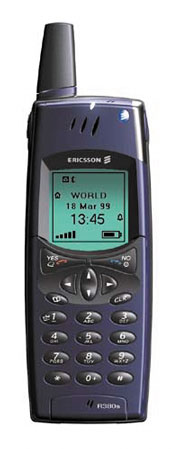
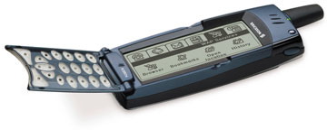

эксперт редакции "BYTE/Россия" по ручным ПК
losik@bytemag.ru
После затянувшегося ожидания кое-что начало проясняться. Гипотетический смартфон, "интеллектуальный сотовый телефон", прелести которого фирмы-изготовители рекламируют уже примерно год, наконец обрел определенные очертания - на рынке появился Ericsson r380, гибрид "цифрового секретаря" и сотового телефона. Это первый смартфон на базе операционной системы EPOC и первый коммерчески доступный смартфон вообще. Интеллектуальный сотовый телефон имеет полный набор функций современного сотового телефона, средства работы с электронной корреспонденцией и управления персональной информацией.
На первый взгляд, Ericsson r380 - вполне обычный сотовый телефон, похожий на предыдущую модель -- Ericsson r320. И похоже, только появившись, Ericsson r380 задал некий стандарт конструкции, как некогда "подсоединяемый органайзер" Palm Pilot. В раскрытом состоянии смартфона пользователь может работать с экраном, занимающим практически весь корпус. Однако цифровую панель телефона можно и закрыть, что оставляет видимыми примерно 30% длины экрана. При этом диалоги на экране меняют свое положение (разворачиваются на 90°) и размеры - при разрешении 120x360 пикселов в режиме закрытой крышки используется область размером 120x116 пикселов.
| Смартфон Ericsson r380 | |
|---|---|
| Цена, долл. | 750 |
| Диапазон, МГц | 900/1800 |
| Память (пользовательская), Мбайт | 1,2 |
| Экран, пикселов | 120x360 (120x116 при закрытой панели) |
| Экран, мм | 28x83 (28x27 при закрытой панели) |
| Коммуникации | IR, последовательный порт |
| Режим инфракрасного порта | IrDA SIP, 115,2 Кбит/с |
| Динамик | 250 мВт, 32 Ом |
| Размеры, мм | 159x51x26 |
| Масса, г | 164 (119 без аккумулятора) |
Телефон
В своей "телефонной" ипостаси эта двухдиапазонная модель представляет собой современную "трубку", которую можно отнести к бизнес-классу. Предусмотрен полный комплект функций, которые предполагаются в изделиях этой ценовой ниши: голосовой набор и голосовое управление, интегрированный модем, инфракрасный порт, объемная записная книжка, органайзер, средства работы с "короткими сообщениями" (SMS), виброзвонок, диктофон, функции настройки мелодий (до 18 штук, с возможностью использовать разные мелодии в зависимости от того, к какой категории пользователь отнес входящий звонок) и т.д.
В режиме "закрытой крышки" работа с Ericsson r380 ничем не отличается от работы с любым иным телефоном, единственный минус - не очень хорошо продуманное меню. Для управления используется стандартная цифровая клавиатура, кнопки "записной книжки", "сброс", Yes и No, кнопки-стрелки (кнопки вертикальной прокрутки показались нам недостаточно комфортными, будучи выполнены не как отдельные кнопки, а как "рычажковая" конструкция, подобная той, что используется для кнопок органайзеров серии Palm III/Palm V). На корпусе устройства (под указательным и большим пальцами, когда пользователь держит телефон в руке) имеются кнопки диктофона и регулятора громкости. Кроме того, в верхнем торце устройства расположен светодиодный индикатор, который при нормальной работе мигает зеленым светом (раз в секунду), а в случае разрядки аккумулятора - красным.
Корпус достаточно велик для сотового телефона, его размеры составляют 130x50x26 мм, масса 164 г. Выпускаются модификации двух расцветок, темно-синей и серебристой (мы испытывали первую). Субъективно изделие весит примерно в полтора раза тяжелее модели Siemens S35 и примерно столько же, сколько Nokia 7110. Имеется антенна, телефон обеспечивает достаточно стабильную связь даже в традиционно "сложных" зонах (к примеру, в лифте) и субъективно достаточно быстро восстанавливает подключение (модель Siemens S35, например, ищет сеть несколько дольше). В целом качество приема можно оценить в 8 баллов (по десятибалльной шкале).
|  | Смартфон Ericsson r380.
|
Стандартная (LiI) батарея Ericsson r380 подозрительно похожа на увеличенную батарею для модели r320. После ее подключения толщина изделия увеличивается примерно на 5 мм, масса - на 45 г (до 164 г). Почему увеличились габариты батареи, в принципе понятно - смартфон имеет более высокое энергопотребление по сравнению с обычным телефоном, работая и как телефон, и как PDA. По спецификации, батарея обеспечивает до 4 ч 50 мин в режиме разговора и до 1 ч 47 мин в режиме ожидания (время зарядки батареи составляет 3 ч). Наши испытания, в общем, подтвердили эти параметры, за одним исключением - максимальное время разговора составило 3 ч 41 мин, что, однако, вполне может объясняться особенностями конкретного аккумулятора. Батареи оказывается достаточно для интенсивной работы в течение полутора дней (заметим, что время работы зависит от очень многих факторов). Правда, для модели Ericsson r380 характерны проблемы любого интегрированного устройства - как только батареи сели, пользователь сразу оказывается и без "трубки", и без органайзера. Однако зарядное устройство достаточно компактно; более того, его конструкция явно оптимизирована для транспортировки: вилка блока питания представляет собой отдельную деталь, и пользователь может просто вынуть ее из блока питания, уменьшая его размеры (заметим только, что целостность этой конструкции достаточно легко нарушить - не предусмотрено средств, которые позволили бы механически зафиксировать "сцепку" блока питания и "вилку"). К телефону или к подставке зарядное устройство и коммуникационный кабель подключаются с помощью общего разъема (кабель питания подключается к переходнику, смонтированному на конце коммуникационного кабеля). Смысл этого решения не очень понятен - при таком подходе подключить телефон к сети без коммуникационного кабеля нельзя, несмотря на то, что коммуникационный кабель "переносится" не так часто, как блок питания (кстати, при желании пользователь может отключить от кабеля и блок питания - имеется специальный разъем). В принципе, особых проблем тут нет, но правильнее было бы сделать "разборным" именно коммуникационный кабель.
Смартфон Ericsson r380 оснащен перезаписываемым ПЗУ и достаточно емкой (для телефона) памятью (1,2 Мбайт), в которой, согласно спецификации, можно одновременно хранить до 100 "заметок" (по 100 символов), 1000 "контактов" (по 50 символов), 700 записей календаря (по 50 символов), 200 электронных писем (по 2 Кбайт).
Меню смартфона представляет собой не традиционный для сотовых телефонов вертикальный перечень пунктов, которые пользователь может выбирать, а несколько "закладок", подобных тем, что используются в интерфейсе Windows и EPOC.
Приемы работы с диалогами создают впечатление, что пользователь работает с единственным "элементом управления", поскольку "вкладки" и окно дисплея переключаются по принципу кольца: нажимая одну и ту же кнопку, можно последовательно "прокрутить" меню. При этом наиболее часто используемые пункты, адресная книга и меню телефона, открываются по нажатию одной кнопки ("стрелка вправо" и "стрелка влево"). Нажимать кнопки-стрелки для того, чтобы начать работу с меню, мягко говоря, не совсем логично, но в сотовых телефонах иной раз используются и более экзотические интерфейсные решения.
В режиме закрытой панели управлять смартфоном можно только при помощи клавиатуры. Нажатие кнопок горизонтальной прокрутки, при наличии на экране меню, позволяет переключать "вкладки", а нажатие кнопок вертикальной прокрутки - пункты меню (заметим, что некоторые диалоги можно прокручивать как по вертикали, так и по горизонтали). При этом в первый момент (сразу после переключения) пункты меню неактивны (отображаются серым цветом); чтобы их активировать, придется нажать кнопку "вниз". Почему разработчики устройства приняли такое решение - знает только Ericsson, но это не очень удобно. Отметим еще задержки при перемещении между вкладками (примерно 0,5-1 с), что иногда раздражает (правда, паузы не столь существенны, фактически их замечают только пользователи, которые привыкли к мгновенной реакции своих "трубок", скажем, Siemens S35 и Samsung SGH-A100; пользователи же, например, Ericsson r320 или Nokia 7110 особенных неудобств не ощутят).
Нажатие кнопки Yes в режиме закрытой панели открывает список номеров, которые набирались недавно, кнопка "записной книжки" позволяет, как нетрудно догадаться, найти номер в записной книжке. Пользователь может задать записи "горячую кнопку" (нажав и удерживая одну из цифровых кнопок), но при этом не будет набираться номер, которому она назначена, а откроется адресная книга и искомая запись будет подсвечена.
Вкладка "Входящие" позволяет просмотреть список сообщений, причем как SMS, так и электронной корреспонденции, которую пользователь извлекал, используя программу Mail (она имеется в ПЗУ смартфона). При этом список сообщений показывается независимо от параметров фильтрации (возможность внутренней программы Mail), в одном окне выводятся и электронные письма, и SMS. Нажимая стрелку вниз, пользователь может выбрать письмо, нажатие Yes позволяет просмотреть его содержимое. К сожалению, прочитанные сообщения никак не отличаются от непрочитанных, хотя было бы логично как-то их выделить. Пользователь может "прокрутить" сообщение (перемещая, в общем, не нужный тут курсор) как по вертикали, так и по горизонтали (в этом, кстати, тоже нет особенной необходимости, поскольку строки прерываются и помещаются в пределах экрана). К сожалению, в режиме закрытой панели не предусмотрено средств для работы с содержимым почтового ящика, несмотря на то, что возможность как минимум удалить SMS была бы полезна (правда, это можно сделать, открыв панель).
Вкладка "Задачи" позволяет просмотреть список дел, который пользователь подготовил, используя органайзер устройства. В этом списке отображаются только заголовки дел, назначенных на дату просмотра (они показываются как однострочные пункты меню, и возможность прокрутить строку по горизонтали в этом случае уже вполне актуальна). Отображаются только те пункты, которые пользователь не пометил как завершенные, - однако пометить дело как завершенное, "кликнув" по экрану пером, в режиме "трубки" нельзя.
Последняя вкладка, "Меню телефона", предоставляет доступ к традиционным для "трубки" функциям: "блокировка клавиатуры", "непринятые вызовы", "беззвучный режим", "громкость звонка", "увеличить громкость", "переадресовать вызов", "ИК-порт", "следующий входящий", "номера услуг". При наличии в буфере обмена ОС какой-либо цифровой информации предлагается также "вставить номер" (если буфер пуст или в нем имеется текст, а не цифры, этого пункта нет). Функции блокировки клавиатуры реализованы не совсем удачно: если пользователь заблокировал клавиатуру (кстати, мы так и не нашли способа активировать эту команду с клавиатуры), после того, как он поднимет крышку смартфона, блокировка снимается. Остальные функции в комментариях не нуждаются, кроме разве что работы с инфракрасным портом - порт отключается после небольшой паузы в работе (1 мин), причем ни режим отключения, ни длительность паузы никак не регулируются.
К сожалению, в режиме закрытой панели нет возможности управлять смартфоном "кликами" по экрану. Кстати, у Ericsson r380 крайне оригинальная клавиатура - в режиме закрытой панели его крышка представляет собой просто пассивную пластиковую конструкцию. Однако можно только восхищаться остроумной конструкцией: при закрытой крышке кнопки передают нажатия так же, как и перо, только "кликают" они не по видимым элементам управления (спискам, полоскам прокрутки и проч.), а по скрытым от пользователя "псевдокнопкам" на сенсорном экране. При этом, поскольку "кнопки" сделаны из прозрачного пластика, решена и проблема подсветки клавиатуры. Преимущества здесь очевидны - надежность и простота ремонта, экономия средств (не нужен контроллер клавиатуры) и энергии (поскольку контроллера нет, то и энергии он не потребляет) и т. п.
Смартфон
Ericsson r380 - это не совсем телефон. Рекламный слоган Ericsson - "Мы называем это смартфоном" - очень точно определяет нишу данного устройства. Фактически эта модель представляет собой гибрид телефона и PDA, на роль которого был "приглашен" Psion. Ericsson (http://www.ericsson.com) - один из владельцев консорциума Symbian (http://www.symbian.com), компании, которая была создана на базе фирмы Psion Software PLC, когда-то разработавшей ОС и прикладное ПО для популярных суперпортативных ПК Psion Series (3, 5, 7, Revo и проч.). Так что вполне закономерно, что в Ericsson r380 использована ОС EPOC, созданная для этих машин.
EPOC: ОС для коммуникатораПлатформа EPOC - разработка компании Symbian (http://www.symbian.com, ранее Psion Software PLC), сегодня превратилась в базу для создания нового поколения устройств персональных коммуникаций. Первая версия Symbian EPOC появилась на рынке в 1997 г., одновременно с выпуском суперпортативного ПК Psion Series 5. Версия EPOC Release 5, выпущенная в 1999 г., представляет собой комбинацию трех компонентов:
Базовая платформа предусматривает графический интерфейс с полным комплектом элементов управления (окна, диалоги, экранные кнопки, полосы прокрутки и проч.), совместимость со стандартом Unicode, средства для синхронизации информации с популярными пакетами PIM, интегрированную СУБД на основе языка SQL и многое другое. Новейшая версия платформы Symbian появилась в ноябре 2000 г.; при этом ее название было изменено с EPOC на "платформа Symbian". В целом платформа Symbian представляет собой комплект программных компонентов и ОС, которые компании -- изготовители WID (Wireless Information Devices) могут использовать как основу для собственных устройств. Имеются программные средства, наборы инструментов разработчика для C++, Java, WAP и Web, коммуникационные протоколы (стеки TCP/IP, WAP, GSM, Bluetooth, предусмотрены IrDA и последовательный порт), средства защиты (шифрование с ключом повышенной криптозащиты и средства проверки сертификата, использование протоколов безопасных соединений), комплект прикладных программ (в том числе адресная книга, календарь, средства обработки сообщений, браузер, голосовая почта, офисные программы, утилиты и системные средства), мощные средства настройки на национальные форматы, совместимость с Unicode, функции распознавания рукописного ввода, настройки шрифтов, форматирования текста и т. п., средства синхронизации данных с программами, работающими на настольных ПК. Платформа Symbian/EPOC изначально разрабатывалась для сверхпортативных устройств с питанием от батарей или аккумуляторов, что предполагает выполнение нескольких весьма жестких требований:
На базе новейшей версии платформы Symbian разработаны две типовые модели коммуникаторов (в терминологии платформы это Wireless Information Devices), Quartz и Crystal. И Quartz, и Crystal основаны на базовой технологической модели (GT) платформы Symbian. Quartz представляет собой планшетный коммуникатор, подобный Palm или PocketPC, с цветным дисплеем (240x320), новым GUI, ориентированным на удобство при выполнении прикладных задач, средствами распознавания рукописного ввода, интегрированным пакетом прикладных программ. Модель Crystal - это дальнейшее развитие клавиатурных PDA; она имеет клавиатуру, экран 640x200, GUI и интегрированный пакет прикладных программ. |
Иная ипостась Ericsson r380 - "цифровой секретарь", органайзер или PDA, кому как нравится. Под цифровой панелью смартфона имеется большой (по меркам мира сотовых телефонов) сенсорный экран, с разрешением 120x360 пикселов (28x83 мм, 2-бит на пиксел; при закрытой панели размер видимой области составляет 120x116 пикселов, 28x27 мм) и прекрасной подсветкой. Экран имеет светло-серый фон и прекрасную контрастность, по качеству наиболее корректно его сравнить с экраном Psion Revo, с некоторым перевесом в пользу Ericsson r380.
|  | Ericsson r380 с открытой крышкой.
|
Будучи прямым потомком моделей Psion, этот смартфон унаследовал комплект прикладного ПО для управления персональной информацией - адресную книгу, планировщик, коммуникационное ПО, игры и прочее. Однако интерфейс этого устройства полностью отличается от GUI, применяемого в Psion, - поскольку Ericsson r380 по сути своей полностью отличается от клавиатурных суперпортативных ПК Psion. Создатели смартфона полностью переработали интерфейс, оптимизировав его для небольшого бесклавиатурного устройства. Главное же то, что пользователю Ericsson r380 представляется вполне однозадачной системой; иными словами, в один момент времени можно работать только с одной программой. Однако, в отличие, например, от PocketPC, невозможность "вручную" завершить программу выглядит не как очевидный "прокол" создателей, а как закономерное следствие попытки сделать работу со смартфоном как можно проще и нагляднее.
В основе идеологии GUI Ericsson r380 лежит концепция "вкладок" - этот принцип применяется и в режиме закрытой панели, и тогда, когда панель откинута. Управление полностью традиционное для PDA -пользователь "кликает" пером по элементам управления программ. Кроме того, в Ericsson r380 имеется панель инструментов; она находится справа и на ней расположены кнопки основного меню, дополнительного меню, переключения на "рабочий стол", кнопка OK и кнопка отмены - Cancel (она показывается как пиктограмма). Пользователь работает с привычными элементами управления - списки, раскрывающийся список, "дерево", поля ввода, полоски прокрутки и т. п.
Некоторые общие принципы работы с Ericsson r380 таковы: как правило, первая пиктограмма представляет собой основную программу вкладки, остальные - просто пиктограммы, которые позволяют открыть какой-либо из пунктов меню, доступных в принципе и из основной программы. Нажав кнопку и не отпуская пера, можно просмотреть подсказку (аналог ToolTips - подсказки, которая появляется, когда пользователь останавливает курсор мыши, например, над панелью инструментов Microsoft Word).
Основной минус Ericsson r380 с точки зрения PDA - невозможность устанавливать прикладные программы. Это закрытая платформа, что, с одной стороны, странно (закрытые платформы уже не в моде), с другой - в чем-то даже правильно. Минусы очевидны - пользователь не может, например, заменить игру "Реверси" из комплекта поставки на Lines, а для обновления ПО придется обращаться в сервисный центр Ericsson. При этом, исходя из опыта использования этого смартфона, можем констатировать, что функциональность стандартных программ практически полностью покрывает потребности "среднестатистического пользователя" как органайзера, так и сотового телефона. Плюсы - несколько увеличивается надежность устройства по причине отсутствия такого мощного потенциального источника проблем, как прикладные программы, созданные не разработчиком устройства. Действительно, смартфон функционирует на редкость стабильно (что, впрочем, и можно было ожидать от ОС EPOC).
Одно из основных положений концепции Ericsson r380 - возможность работы с WAP. Причем не как с игрушкой, способом извлечения информации о погоде или курсе валют, а как с основой для создания информационных систем предприятий. Иными словами, перспектива продать какой-либо крупной компании смартфон Ericsson r380 и предоставить ее сотрудникам работать с сетью предприятия, используя WAP, явно представлялась крайне привлекательной создателям этого смартфона. При таком раскладе невозможность использовать нестандартные программы становится заметным преимуществом. Менеджеру по продажам совершенно незачем устанавливать свои программы на терминал доступа к корпоративной ИС (в который превращается смартфон при таком подходе), его дело - продать и передать информацию.
Так или иначе, максимум "расширяемости", который предусмотрен для Ericsson r380, - загрузка языковых файлов для конкретного языка (английский "прошит" в ПЗУ, дополнительный язык пользователь выбирает сам). Смартфон обеспечивает работу с символами кириллицы и даже полный перевод интерфейсов прикладных программ на русский язык. Поэтому потенциальная проблема PDA - русификация - решена в зародыше. Для ввода данных используется система распознавания рукописного текста CIC Jot (та же, что и в устройствах Microsoft Palm-Size PC/PocketPC), которая "не понимает" кириллицы. Поэтому русскоязычным пользователям придется прибегать к виртуальной экранной клавиатуре. Правда, клавиатура эта в чем-то даже удобнее, нежели система распознавания рукописного ввода. Кроме того, когда речь идет о вводе некоей цифровой информации персоналом компании, имеет смысл принудительно задавать использование не системы распознавания, а клавиатуры, поскольку вероятность ошибочного ввода при нажатии на кнопки существенно ниже, чем у системы рукописного распознавания (наличие клавиатуры, кстати, представляет собой одно из основных преимуществ индустриальных PDA Psion WorkAbout перед конкурирующими изделиями на базе платформ PalmOS и Windows CE).
В "полноэкранном" режиме на экране размещается несколько вкладок: "Телефон", "Календарь", "Контакты", "Входящие", "WAP" и "Дополнительные". Панель смартфона в некотором смысле играет роль кнопки подтверждения/отмены - после того, как пользователь закрыл панель, изменения, сделанные, например, в "заметке", сохраняются автоматически.
Мы отметили заметные паузы при запуске программ - в среднем, для запуска конкретной программы нужно 3 -- 5 с, однако для программ, которые используются постоянно, это время постепенно уменьшается (до 1-1,5 с), поскольку многие их подсистемы уже загружены в ОЗУ.
Вкладка "Телефон" представляет собой экранный вариант цифровой клавиатуры, с той только разницей, что пользователь может работать с дополнительными функциями (и нажимать кнопки пером, разумеется). Вкладка "Контакты" представляет собой интерфейс к базе данных адресной информации. В смартфоне используется весьма мощная программа-органайзер, которая позволяет вводить и искать данные о полутора десятках полей для каждой записи (имя, фамилия, до 10 номеров телефонов, причем можно добавлять номера по мере надобности, адрес электронной почты и WWW, должность, компания, улица, город, область, "заметка" и проч.). Записи сортируются по алфавиту, причем предусмотрены "вкладки", упрощающие навигацию (при наличии русского языка имена английскими символами размещаются в первой вкладке, "A-Z"; русские - на восьми соответствующих вкладках, одна выделена для записей, начинающихся с символов и цифр). Кроме того, предусмотрена возможность создать свою "визитную карточку", которая будет доступна как первая пиктограмма панели "Контакты". Вкладка "Сообщения" предоставляет доступ к почтовому ящику пользователя. Пиктограмма "Входящие" позволяет просмотреть ящик, в который "складируются" как электронные письма, так и SMS. По умолчанию отображается список сообщений, для каждого из которых показывается тип сообщения (e-mail или SMS), корреспондент и дата. Список можно прокручивать, непрочитанные письма выделяются "полужирной" пиктограммой закрытого письма.
В Ericsson r380 используется весьма оригинальная схема работы с почтой, та же, что и в других устройствах на базе платформы EPOC. Смартфон позволяет работать с электронной корреспонденцией по протоколам POP3 и IMAP4, извлекая "заголовки" сообщений. При этом кнопки "извлечь почту" как таковой нет, но после того, как пользователь подключился к сети, предлагается отметить те сообщения, которые нужно скопировать в память смартфона. Это ускоряет процедуру - ненужные письма можно попросту не извлекать. Пользователь может "прицепить" к письму "визитную карточку" (свою или иную из базы данных "Контакты"), "запись из календаря" или "задачу". Смартфон позволяет не только передавать, но и принимать "прицепленные" документы в форматах vCard и vCalendar; остальные "приложения" можно извлечь для того лишь, чтобы переслать (к сожалению, невозможно извлечь сообщение отдельно от вложения).
Основной минус Ericsson r380 - несовместимость с кодировками Windows-1251 и КОИ8-Р. Имеющаяся в нем программа работы с электронной корреспонденцией ориентирована на кодировки UTF-7/8, US-ASCII и ISO 8852-1/5 (5 - это как раз кириллица). Причем формально это верно, кодировка ISO 8859-5 -стандартная кодировка для России, а Windows-1251 и КОИ8-Р - нестандартные. Но пользователям, которые будут работать с Ericsson r380, от этого не легче. Вариантов решения проблемы несколько. Можно потребовать от корреспондентов пользоваться только кодировкой 8852-5 или же использовать для работы с почтой WAP-узлы, которые предлагают услуги просмотра почтового ящика. Последний способ, как показала практика, даже интереснее, поскольку работает быстрее (разница во времени при просмотре 10 Кбайт письма составляла примерно 21 с; это означает, что на пяти письмах экономится минута, или до 21 цента, в зависимости от времени и тарифных планов). Полностью отсутствуют проблемы с кириллицей, поскольку кириллические WAP-узлы браузер Ericsson r380 отображает совершенно корректно. Минус только один - оставляя на сервере, с которого проверялась почта, пароль к нему, пользователь рискует конфиденциальностью, но никто не мешает компании создать и собственный WAP-сервер.
При работе с "короткими сообщениями" пользователь может использовать как латиницу, так и кириллицу, причем длина SMS ограничена 32 Кбайт (сообщения либо просто "режутся" на обычные SMS, либо "интеллектуально разбиваются" на те же SMS, но с возможностью снова "слить" их в длинное). Проблем с кириллицей не замечено, а работать с нормальной клавиатурой заметно приятнее, нежели вводить символы, многократно нажимая кнопки телефона.
Вкладка "Календарь" предоставляет функции работы с планировщиком. В ней имеется несколько пиктограмм собственно программы планирования ("Месяц", "Неделя" и "День"), пиктограмма "Задачи" (позволяет создать "список дел", как и в PalmOS, эта функция вынесена из программы-планировщика). Вкладка "WAP" позволяет запустить WAP-браузер, который в Ericsson r380 достаточно хорошо продуман и в сочетании с достаточно (для WAP) большим экраном сумел поколебать наше давнее мнение о бесполезности этого метода просмотра Сети. WAP-браузер работает превосходно. Он корректно отображает кириллицу, позволяя, например, просматривать электронную почту в кодировках Windows-1251 и КОИ8. Вкладка "Дополнительные", как нетрудно догадаться, позволяет работать с дополнительным ПО и (тут догадаться уже не так просто) изменять параметры.
Пиктограмма "Блокнот" позволяет просмотреть, создать или изменить текстовые заметки (это в некотором смысле копия программы MemoPad из комплекта любого устройства с PalmOS). Пиктограмма "Калькулятор" открывает окно калькулятора, в общем, примитивного ( четыре действия, извлечение квадратного корня и расчет процентов), но удобного тем, что его кнопки можно нажимать без пера. Пиктограмма "Игра" открывает окно с игрой "Реверси". Пиктограмма "Система" позволяет изменить конфигурацию "трубки". В ее окне имеется несколько пунктов - "Параметры", "Хранилище", "Калибровка экрана" и "Версия программы". Первый предназначен для настройки параметров устройства, пункт "Хранилище" позволяет просмотреть статистику использования памяти каждой из программ, "Калибровка экрана" позволяет откалибровать экран, пункт "Версия программы" - просмотреть версии ПО телефонии и "организатора".
Синхронизация
В Ericsson r380 предусмотрены мощные средства для обмена информацией с популярными пакетами PIM, такими как Lotus Notes 4.5/4.6/5.0 (синхронизируется адресная книга, календарь и электронная почта), Lotus Organizer 4.1 (адресная книга и календарь), Lotus Organizer 5.0 (адресная книга, календарь и текстовые заметки), Microsoft Outlook 97, 98, 2000 (адресная книга, календарь и электронная почта заметки) и Microsoft Exchange. Для обмена данными применяется пакет Communications Suite, в комплекте поставки имеется коммуникационный кабель (согласно документации, синхронизация возможна только по кабелю, но не через инфракрасный порт). Мы не отметили особенных проблем при синхронизации с Microsoft OutLook 2000, и можно предполагать, что при интеграции смартфона в корпоративную информационную систему они тоже не проявятся.
***
Смартфон Ericsson r380 - устройство крайне интересное. Немногочисленные минусы этого устройства - это минусы по меркам мира PDA, но не сотовых "трубок", поскольку эта модель по функциональности превосходит любой из существующих на рынке телефонов. Российское представительство Ericsson сегодня работает над исправлением многих недостатков (например, несовместимости с кодировками Windows-1251 и КОИ8-Р).
Сегодня в мире уже реализовано несколько достаточно крупных проектов с применением Ericsson r380, пока в основном в финансовой сфере, и эта модель в значительной мере представляет интерес скорее для корпоративных пользователей, нежели для индивидуальных, поскольку оптимизирована исходя из потребностей компаний, которым нужно управлять деятельностью, например, торговых представителей или персонала, занятого сбором информации за пределами офисного здания.
Внутри Ericsson r380Ericsson r380 - модель по сути двухпроцессорная. В ней имеется процессор органайзера, на котором работает ОС EPOC, и процессор цифровой обработки сигнала, на котором работает стек протоколов телефонии. Оба процессора работают согласованно - в системе команд семейства ARM4 имеется подмножество инструкций, которые предназначены как раз для этого. В Ericsson r380 используется модифицированная версия ОС EPOC - Release 5u, которая (в отличие от редакции этой же ОС для PDA Psion) обеспечивает работу с Unicode (факт важный уже потому, что возможность работы с кириллицей, пусть ограниченная и не лишенная проблем, предусмотрена изначально). Разработчики Ericsson использовали ядро ОС и полностью изменили пользовательский интерфейс. ОС EPOC позволяет модифицировать интерфейс ОС и прикладных программ до неузнаваемости, практически не перерабатывая их ядро; соответственно Ericsson просто заменила стандартный интерфейс EPOC, известный по машинам Psion, на собственный GUI под названием Ericsson Component Kit, который был оптимизирован для бесклавиатурного устройства с небольшим экраном. В ранних версиях EPOC использовался восьмиразрядный набор символов, совпадающий с кодовой таблицей Windows 1252. Наличие 256 символов вполне достаточно для кириллицы и западноевропейских языков. Имелись некоторые рудиментарные возможности управления региональными настройками, с помощью которых в принципе можно было создать версию EPOC для других кодовых таблиц. Теоретически EPOC могла бы работать с русским, греческим и прочими языками, при условии, что используется не более 256 символов. Однако на практике это условие было сложно выполнить из-за того, что отдельные символы использовались системными средствами в качестве специальных; помимо того, возникали проблемы, связанные с переносом данных между файлами из различных версий EPOC или между EPOC и внешними носителями. Поэтому на практике EPOC в те времена была тесно связана с кодовой страницей 1252 (русификаторы EPOC модифицировали ее и "прописывали" в кодовую таблицу Windows 1252 символы кириллицы). EPOC с восьмиразрядной системой для работы с текстом поставлялась вплоть до 1999 года. Последняя восьмиразрядная версия - это EPOC Release 5, или просто ER5. Во всех последующих выпусках использовался стандарт Unicode; причем первая версия - это не более чем обычная Unicode-версия для ER5, известная как ER5u. Она была выпущена в конце 1999 года и как раз и применяется в смартфоне Ericsson R380, а также в других изделиях на базе EPOC (в том числе компаний Nokia, Motorola, Psion, Matsushita и Philips). Создание ER5u знаменует появление единого фундамента как для самой EPOC, так и для всех ее прикладных программ - текстового процессора, электронной таблицы, Web-браузера, почтовой программы, базы данных и т.д. Все компоненты теперь работают в кодировке Unicode без каких-либо специальных изменений. Безболезненно перейти от восьмиразрядной системы кодирования к Unicode во многом удалось благодаря тому, что EPOC изначально разрабатывалась как "двухосновная". С самого первого дня все разработки велись для двух вариантов - для "ограниченной" (narrow) версии с восьмиразрядной кодировкой и для Unicode-версии. Для этого в тексте одних и тех же программ использовался макрос препроцессора _UNICODE. При выборе второго варианта все текстовые элементы программы автоматически получали 16 бит на символ. Имеется, правда, одна особенность: таблица кодовой страницы 1252 не полностью совпадает с первыми 256 элементами кодов Unicode. В 1252 имеется ряд полезных символов, таких как "маркер списка" (bullet), символ "многоточие" (ellipsis) и недавно введенный символ валюты евро (Euro); они относятся к диапазону 128 -- 159, который в Unicode отведен под другие, редко используемые на практике управляющие символы. Поэтому в тексте программ приходится учитывать данную особенность с помощью конструкций типа: #define ELLIPSIS 133. Тем не менее все используемые в настоящее время внутри EPOC текстовые элементы соответствуют кодировке Unicode, а о существовании восьмиразрядных элементов фактически не вспоминают. |